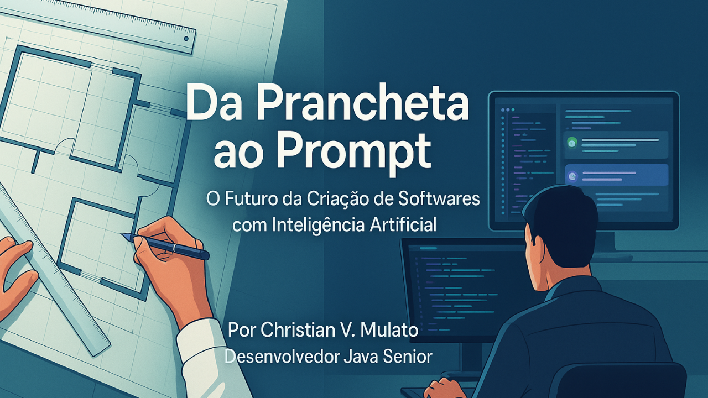

Da Prancheta Ao Prompt - O Futuro Da Criação De Softwares Com Inteligência Artificial
{width="5.905555555555556in" height="3.3222222222222224in"}
Um olhar sobre o futuro da programação com inteligência artificial.
Da Prancheta ao Prompt: O Futuro da Criação de Softwares com Inteligência Artificial
 {width="1.0416666666666667in" height="1.0416666666666667in"}
{width="1.0416666666666667in" height="1.0416666666666667in"}
Desenvolvedor Java Sênior | Especialista em Back-end | Jakarta, Spring Boot, REST APIs, Docker | Engenheiro Químico
3 de julho de 2025
Introdução
Na década de 1990, engenheiros civis que estavam acostumados a desenhar plantas em papel A1 testemunharam a chegada do AutoCAD. Com isso, passaram a digitalizar sua criatividade, seus cálculos e sua precisão. A produtividade disparou --- e, com ela, também a exigência por novas habilidades. Hoje, vejo algo semelhante acontecer na área de desenvolvimento de software. Com o avanço da inteligência artificial, estamos deixando de "desenhar cada linha de código" para guiar máquinas inteligentes com prompts e descrições de alto nível. Será que a IA para programadores é o novo AutoCAD para desenvolvedores?
Do lápis ao AutoCAD
Antes da automação do desenho técnico, o trabalho de projetar uma casa ou um prédio era um ritual de paciência. Um erro podia exigir horas de correção manual. Com a chegada do AutoCAD, o tempo foi otimizado, as revisões se tornaram dinâmicas e a colaboração entre disciplinas (estrutural, elétrica, hidráulica) ganhou uma nova dimensão.
Contudo, a ferramenta não substituiu o engenheiro. Ela apenas reorganizou o fluxo de trabalho. O que mudou foi o meio --- não a necessidade de raciocínio crítico, conhecimento técnico e visão sistêmica.
Do código puro à IA assistida
Como Desenvolvedor Java Sênior, já escrevi milhares de linhas de código --- do zero, com atenção total à sintaxe, arquitetura e performance. Nos últimos anos, porém, percebi um salto parecido com o que ocorreu na engenharia civil. Com ferramentas como ChatGPT, GitHub Copilot e outros assistentes de codificação, a produção de código se tornou mais fluida. Podemos esboçar funcionalidades em linguagem natural e receber sugestões completas de implementação.
Isso não significa que a IA faz tudo sozinha. Assim como no AutoCAD, é preciso saber o que está fazendo. Validar, refatorar e entender o contexto técnico continua sendo essencial. A IA muda o foco do "como" para o "por que e para quem".
O novo papel do programador
Assim como os engenheiros civis aprenderam a usar o AutoCAD como extensão de sua capacidade, acredito que nós, desenvolvedores, estamos sendo convidados a assumir um novo papel: mais arquitetos de soluções e menos digitadores de código.
Para isso, é preciso estudar continuamente, desenvolver pensamento sistêmico e dominar tanto as ferramentas clássicas quanto as novas tecnologias baseadas em IA.
Sobre mim
Sou Desenvolvedor Java Sênior com mais de 15 anos de experiência em sistemas web, automação de processos e integração de soluções. Estou em busca de novas oportunidades profissionais em que possa aliar minha experiência técnica à inovação trazida pela inteligência artificial.
Se quiser conversar sobre tecnologia, projetos ou parcerias, estou à disposição para um café virtual. Vamos nos conectar?
Por Christian V. Mulato -- Desenvolvedor Java Sênior à procura de novas oportunidades.